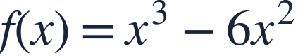
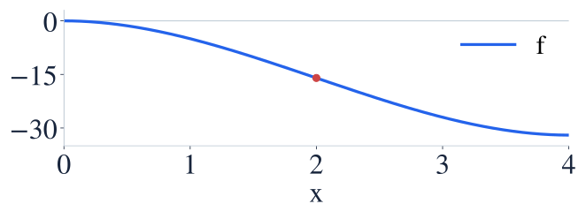
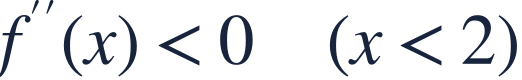
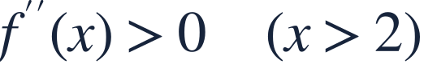
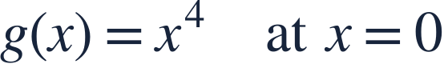

Concavity and inflection
오목성과 변곡점

Concavity describes changing slopes; an inflection point needs a change of concavity.
오목성은 기울기의 변화를 나타내며 변곡점에는 오목성 변화가 필요합니다.

Concavity describes changing slopes; an inflection point needs a change of concavity.
오목성은 기울기의 변화를 나타내며 변곡점에는 오목성 변화가 필요합니다.
Positive f″ means slopes increase; negative f″ means slopes decrease.
f″이 양수이면 기울기가 증가하고 음수이면 감소합니다.

The second derivative changes from negative to positive at x=2.
이계도함수는 x=2에서 음수에서 양수로 바뀝니다.

Left of 2 the graph is concave down.
2의 왼쪽에서는 그래프가 아래로 오목합니다.

Right of 2 the graph is concave up.
2의 오른쪽에서는 그래프가 위로 오목합니다.
The function is continuous and its concavity changes here.
여기서 함수는 연속이고 오목성이 바뀝니다.
The equation f″=0 gives a candidate; it does not prove an inflection point.
f″=0은 후보를 줄 뿐 변곡점임을 증명하지 않습니다.

Is 0 an inflection point? Explain with signs.
0은 변곡점인가요? 부호로 설명하세요.